GitHub - Introduction, Uses, Purpose, and Installation Guide
1. Introduction to GitHub
GitHub is a web-based platform used for version control and software development. It helps developers store, manage, track, and collaborate on coding projects.
2. Uses of GitHub
Store source code online
Track project changes
Collaborate with teams
Manage open-source projects
Backup important files
3. Purpose of GitHub
The main purpose of GitHub is to improve teamwork and project management in software development.
4. Installation and Usage Steps with Screenshots
Step 1
Open GitHub website and click Sign Up.

Step 2
Fill account details and verify email.
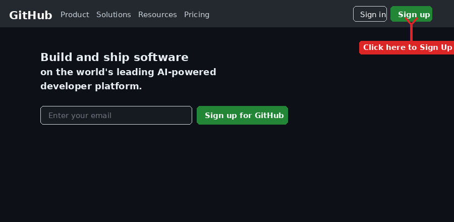
Step 3
Download and install Git.
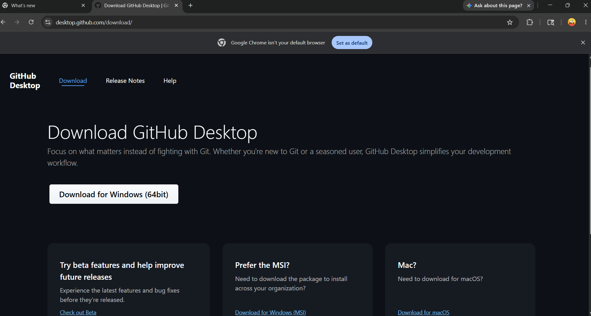
Step 4
Github dashboard
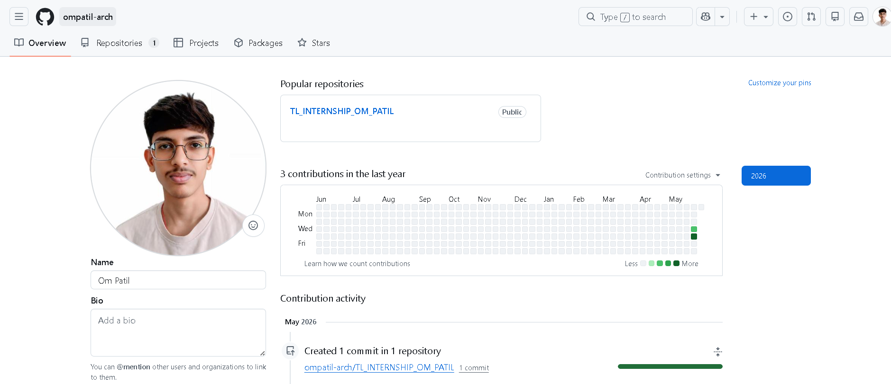
Step 5
Configure Git with Your Name & Email
Git needs to know who you are. Run these two commands in your Terminal or Command Prompt:
Step 1: Set your name
git config --global user.name "Your Full Name"Step 2: Set your email (use the same email as GitHub)
git config --global user.email "youremail@example.com"Step 3: Check your settings
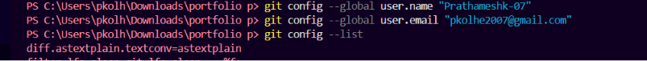
git config --listStep 6
Create a Repository on GitHub
A repository is like a folder on GitHub where your project files live.
Step 1: Log in and go to New Repository
Log in to GitHub → Click your profile picture → Click Your repositories → Click New (green button)
Click your profile picture:
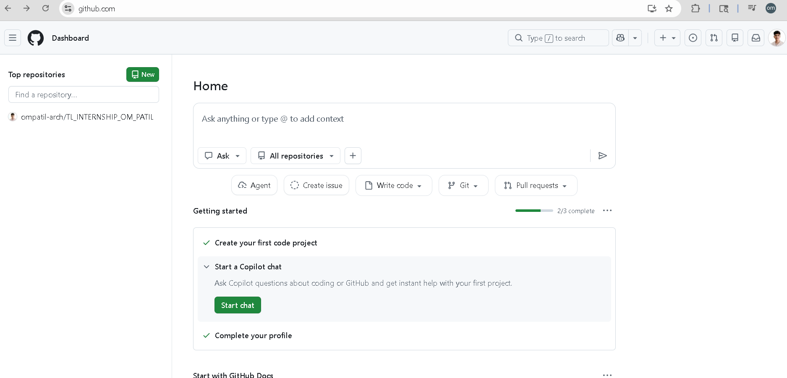
Click Your repositories:
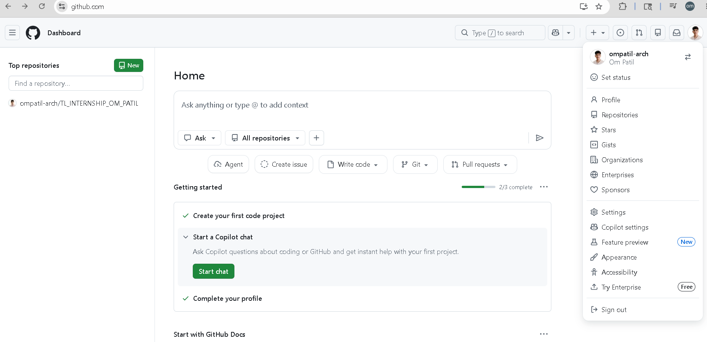
Click New :
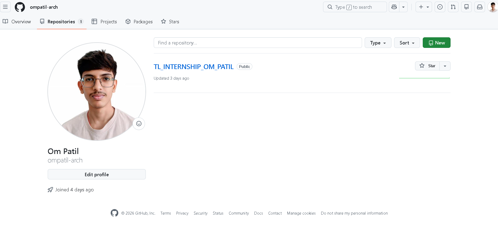
Step 2: Fill in the repository form
- Repository name — type: my-first-project
- Description — short note about the project
- Select Public
- Tick Add a README file
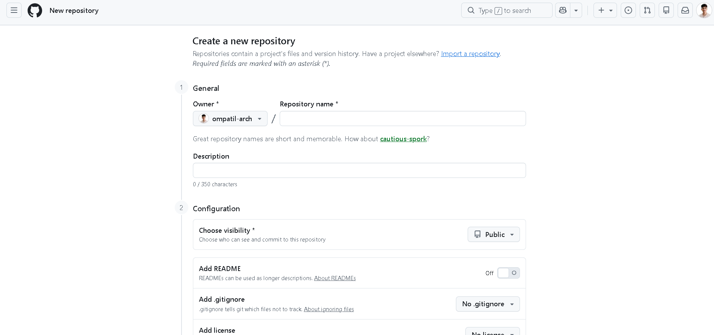
Step 3: Click Create repository:

Section 5 – Open the Project in VS Code
Step 1: Open VS code
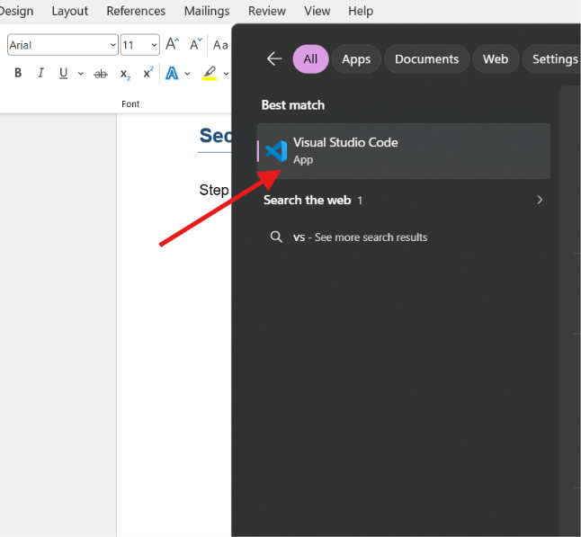
Step 2: Click on file

Step 3: Click on open folder

Step 4: Select a folder and open it

Section 6 - Push File by using VS code
Step 1: Click on terminal
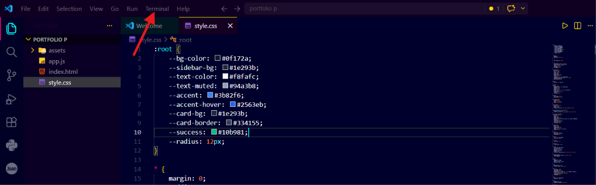
Step 2: Open new terminal
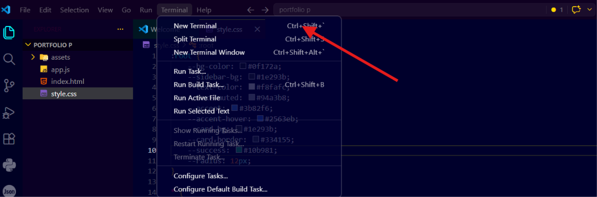
Step 3: Add the commands to Push Files into GitHub
Initialize the git by git init

Git Status
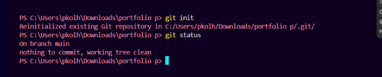
Git Branch -M main
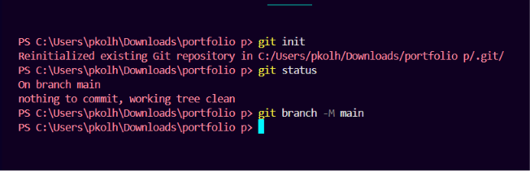
Git commit -m "Message"

Git add

Git remote add origin "Address".git

Git push origin main --force

Section 7 - Check the pushed files
The File successfully push the file in GitHub
Conclusion
GitHub is an essential platform for developers to manage, share, and collaborate on projects.